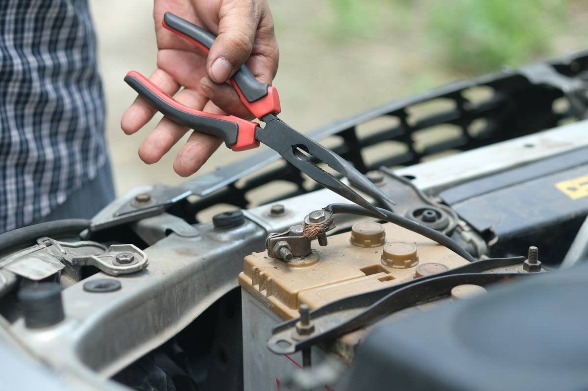

Proper fault-finding with real diagnostic equipment, on your driveway — not a parts-cannon guessing game that costs you twice.

A warning light is a symptom, not an answer. Getting to the actual cause takes proper testing — not swapping parts one at a time and hoping something sticks.
If it's throwing a warning light or behaving strangely, it's worth diagnosing properly before anyone starts replacing parts and hoping.
Plus a small call-out fee based on your location — always confirmed upfront, no surprises.
No — clearing a code only turns the light off temporarily. If the underlying fault isn't fixed, it'll come back. A proper diagnosis finds the actual cause.
Often, yes — stored fault codes and freeze-frame data can point to intermittent issues even when the car's behaving fine on the day. Some faults do need to be caught in the act, and I'll be upfront if that's the case.
Yes, with a focus on Japanese and European vehicles. If there's something outside what I can properly diagnose, I'll tell you straight away rather than guess.
You get a plain-English explanation of the fault and a quote for the repair. No obligation to book the repair with me if you'd rather take the diagnosis elsewhere.
Call, SMS, or use the full enquiry form on our home page — we'll get back to you within a few hours.
Dunsborough · Quindalup · Vasse · Yallingup · Busselton · Cowaramup · Margaret River